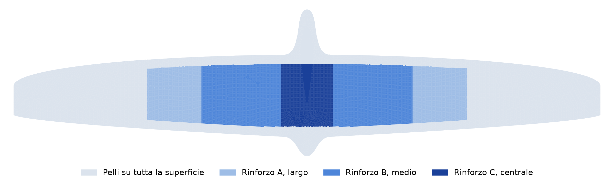

Context
The rudder of a foiling Moth is a vertical blade about 1.7 m long with a horizontal wing at the bottom, the foil, which helps lift the boat out of the water. It has to be stiff, because bending changes the attitude and therefore the lift, and as light as possible. The SuMoth Challenge rules also require a significant share of glass fibre alongside carbon, for sustainability reasons.
The work was a training exercise of the department, done in HyperMesh partly on my PC and partly on the university's. It taught me the complete workflow of an analysis on a composite structure.

Geometry and mesh
Starting from the CAD surfaces I cleaned up the geometry and generated a mesh of shell elements, mostly quadrilateral, on the outer surfaces of the vertical and the foil. The rudder is a composite shell filled with foam, so a shell model with the laminate properties describes its bending and torsional behaviour well at a reasonable computational cost. The mesh is finer in the fillet and in the joint, where stresses concentrate.
Composite laminates
The layup is divided into zones: the skins covering the whole blade surface, local reinforcements where loads are higher, the spar along the vertical, and the "socket", the tapered joint that connects the vertical to the foil. Each zone has its own stacking sequence of unidirectional and biaxial carbon and glass plies, which in the model become composite properties assigned to the elements.

The material properties come from the team's test campaign on specimens:
| Property | Carbon UD 400 g/m² | Carbon biax 200 g/m² | Glass UD 160 g/m² |
|---|---|---|---|
| Modulus E₁ [MPa] | 163,480 | 15,520 | 57,200 |
| Modulus E₂ [MPa] | 8,190 | 15,520 | — |
| Tensile strength Xt [MPa] | 1,890 | 139 | 1,200 |
Loads, constraints and contact
The hydrodynamic loads come from the team's CFD analyses, in two conditions: a nominal one, at 4 m/s with 7° of incidence and 15° of heel, and a critical one, at 5.2 m/s. To account for dynamic effects, a safety factor of 2 is applied in the nominal condition and 1.5 in the critical one. The vertical is clamped at the nodes corresponding to the interface with the hull. The vertical and the foil are two separate components, connected by a nonlinear contact in the socket: this way the model transmits the forces through the joint surfaces as in reality, instead of treating the rudder as a single piece.
What I learned
It was my first FEM model of a real composite structure. I learned to prepare a good-quality mesh on a complex geometry, to translate a layup table into model properties and to think about how constraints and contacts change the result. I also saw how much the dialogue with the people working on fluid dynamics and manufacturing matters: the loads come from CFD, and the layup must be something the workshop can actually build.